住宅翻新 · UAT 定案版
1 · 总设计思想
- 一色：PT-01 Swiss Coffee（Behr 12 对色）。墙、天花、门、门套、踢脚、壁炉背面与两侧返面同为此色；墙用可擦哑光，天花用平光，门、门套、踢脚用缎面。
- 一木：白橡。地板、柜体、家具、楼梯踏步与踢面、实木条、TFL、贴皮全部对同一块总样板，用同一种清面漆。
- 一石：Calacatta 3cm 只用在中岛（台面与两端瀑布）；其余台面、浴柜台、龛底、窗台均为素面暖白石英。
- 一金属：哑黑。五金、灯体、电视和门窗框内侧（PT-04 Tricorn Black）均为哑黑。
- 成面的黑：只有电视、钢琴、火箱开口。
- 外门扇：前门与后院四扇门扇为深暖炭 Iron Ore（SW 7069）；前门室外侧 42" 竖向哑黑拉杆 + 独立哑黑锁体，室内侧同款拉杆（全屋唯一一处门拉杆）。
- 四卫干区墙面：主卫北墙 + 入口门墙 + 马桶间四面、Bath2 南 / 西墙、Bath3 东 / 南墙、Bath4 盆柜墙（南墙）+ 东墙门南段——全高浴室级防霉 PT-01 Swiss Coffee 哑光到顶（现状为光面墙）；
分区总图 — 全屋各区名称与位置；色块 = 家具。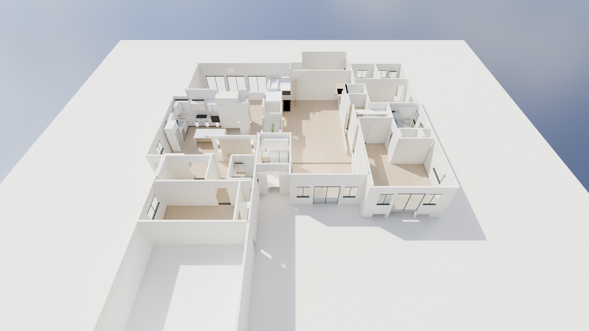
全屋鸟瞰（屋顶剖切） — 天井居中；Family 翼低 2 尺；客厅人字顶。
2 · 施工要求清单
水
- 排水疏通口：卫生间、厨房、洗衣房的排水管都要有带盖疏通口，方便下水管阻塞时的排查和排污；盖面放在柜箱内或隐框检修板后，不外露。
- 检修板：浴室淋浴 / 浴缸阀体背面设检修板，方便漏水检修；12×12 隐框，刷 PT-01，止水阀集中在板后。
电
- 感应开关：四卫（空置模式：手动开、自动关）、入户筒灯（含梯厅筒灯）、洗衣房、车库（有人即亮）。
- 调光器：四个卧室、厨房、书房、两个客厅。
- 吊柜底灯带：厨房所有吊柜底（南墙吊柜 + 东墙吊柜含转角柜）。
- 室外灯：正门 2 盏（门两侧各 1）、后门 2 盏、车库 3 盏、车库后门 1 盏、主卧后院门 2 盏、厅后院门 2 盏、热水器房 1 盏、洗衣房后门 1 盏；哑黑圆柱全遮光下照 3000K。门面 9 盏（正门、车库门、厅后院门、主卧后院门）天黑常亮；工作门 5 盏（厨房后门、车库后门、洗衣房后门、热水器房）用同款带感应增亮：天黑 20–30% 常亮、人近 100%。
空调
- 风口：换哑白平贴格栅（天花 4×12 / 4×14 或线形 bar grille）。
门
- 实芯门：80" 实芯平板，PT-01 缎面；四间卧室、四间卫生间（含主卫马桶间）、洗衣房。
- 空芯门：80" 空芯平板，PT-01 缎面；衣帽间和储物间。
- 门套：2¼"×¾" 平板，PT-01。
- 踢脚：3½"×⅝" 平板方切，PT-01 缎面；踢脚底无鞋线、无四分圆，直接压地板。
窗
- 主卫天窗：封掉主卫盆上的扁平天窗（西墙横长高窗）；外墙面同质感、同整面 finish coat；内侧墙面整平 PT-01 到顶，无窗台无回边。
3 · 入户与台阶
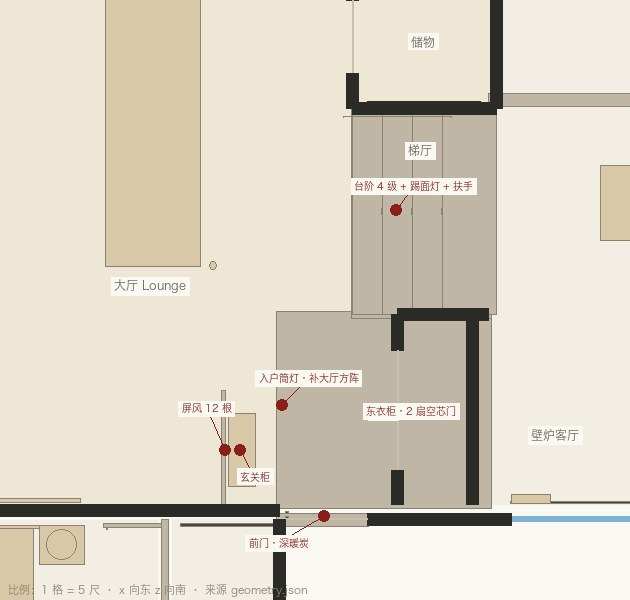
入户与台阶 · 平面 — 本区位置与各房间名称；细节看效果图。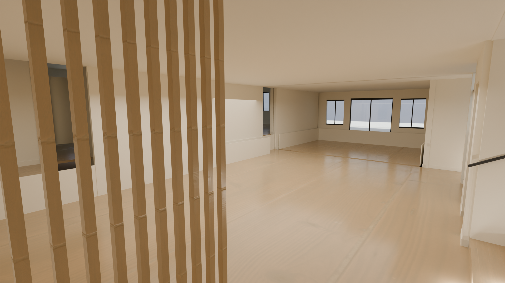
入户门厅（站在前门内） — 左：屏风，门西 2 尺、12 根通顶；正前：43 尺到后院双开门；右：4 级白橡台阶 + 哑黑扶手；顶：无吸顶灯，筒灯补齐大厅方阵。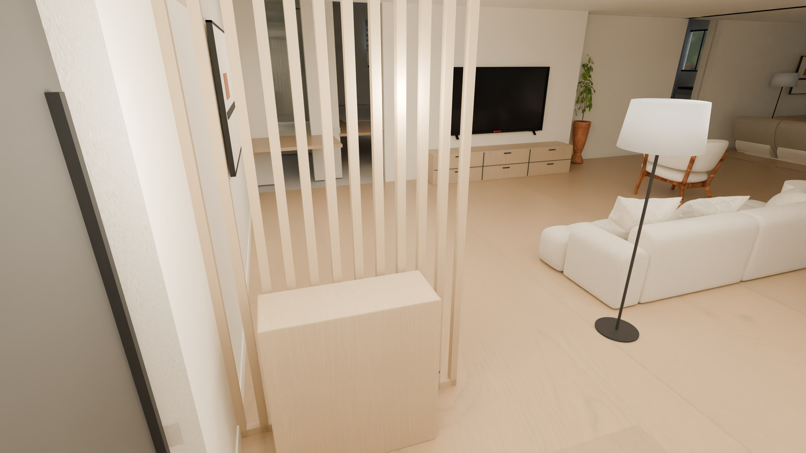
玄关柜（站在衣柜前向西看） — 屏风东侧、门与屏风之间；白橡（图中深色柜为代用模型）。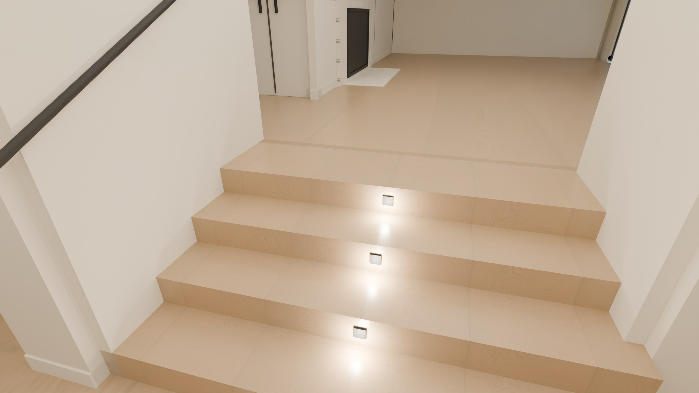
靠正门的台阶（从大厅侧看） — 4 级白橡踏步向东上走廊层；最下 1.5 级伸出衣柜墙；每级踢面居中 2" 圆形哑黑踢面灯（渲染方形镀铬为旧示意）；北侧连续圆管扶手两端回墙。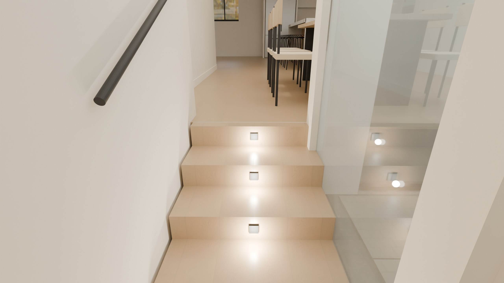
通往餐厅走廊的台阶（从过道看） — 3 尺宽 4 级；北墙扶手；同款踢面灯；上去是餐桌区。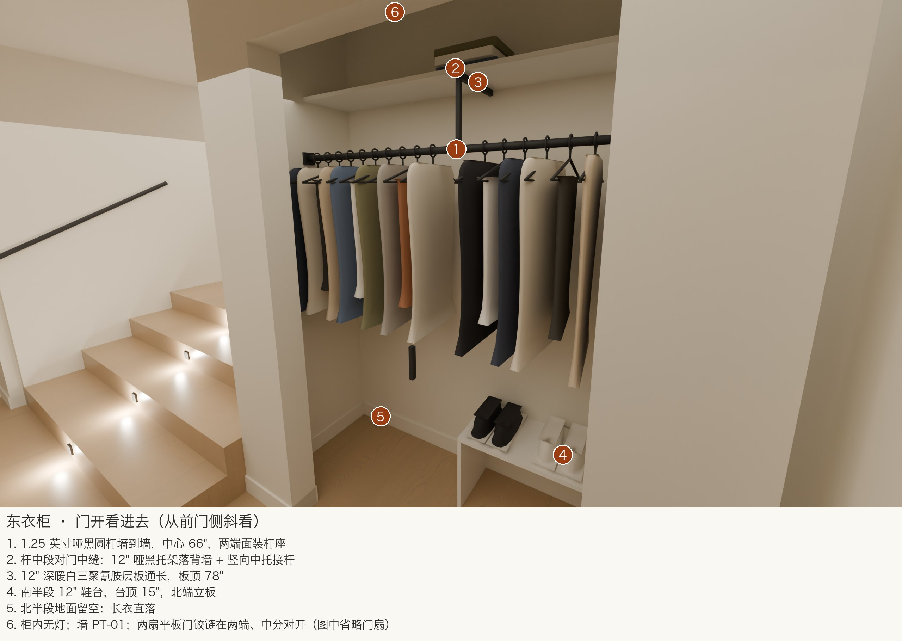
东衣柜 · 门开看进去（从前门侧斜看） — 25" 深 × 71" 长：一根墙到墙 1¼" 哑黑圆杆、中心 66"，杆中段一只哑黑中托；杆上方 12" 暖白层板、板顶 78"；南半段地面 12" 鞋台、台顶 15"；北半段留给长衣直落到地；柜内不装灯。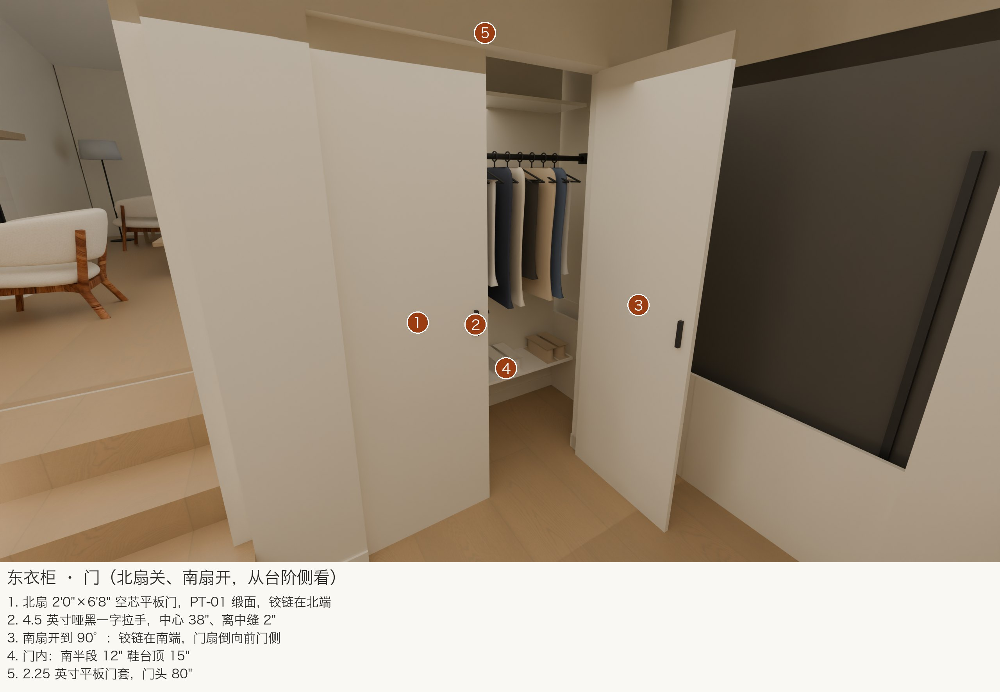
东衣柜 · 门（两扇趟门，图示前扇推到北半） — 两扇 24×80" 空芯平板趟门走顶挂双轨（bypass）、地面一只底导向，PT-01 缎面 + 2¼" 平板门套、门头 80"；门扇零外摆，前门开到 90° 时也互不相扫；4.5" 哑黑一字拉手各一只、靴中缝一侧、中心 38"；一次开一半（24"）。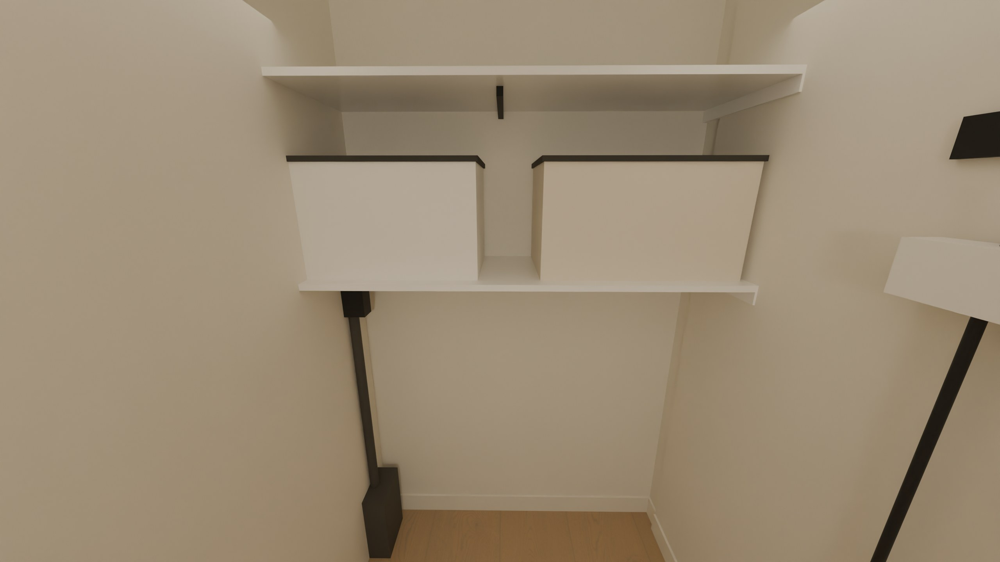
储物间 · 东墙两块层板（站在门口向东看） — 52"×58" 小间只做一面墙：东背墙 16" 深暖白层板 ×2，板顶 50¾" / 72"，每块板中点一只 12" 哑黑托架藏在板下、两端压条；底板下 50" 净高停吸尘器；层板上放带盖箱；门前地面全空；白橡地板连铺进来。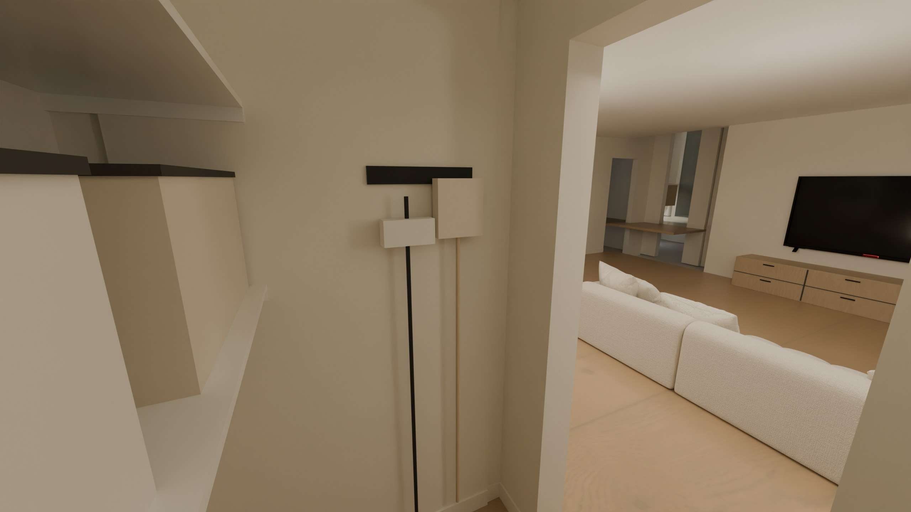
储物间 · 南墙拖把夹与留空地面（从东北角向西南看） — 南墙门边一条 16" 哑黑 5 槽拖把夹、中心 64"，扫把 / 拖把挂起；北墙、门背全空，只有 1 只插座中心 18"；顶 9" 平吸顶灯 3000K、门内感应开关；门铰北框、外开向大厅。电箱、门铃变压器、踢面灯驱动都不在这间。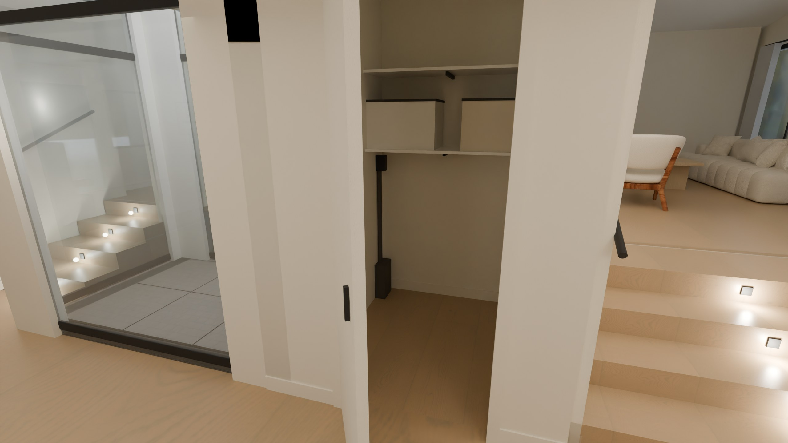
储物间 · 门（半开，从大厅看） — 30"×80" 空芯平板门 PT-01 缎面 + 2¼" 平板门套；铰链在北框、向大厅外开；4.5" 哑黑一字拉手竖装、中心 38"；门内外同层无门槛。本区要点
- 屏风：12 根 1×2 白橡实木条 @2½" 空，8 尺通顶、顶底横档；前门西 2 尺。
- 台阶 ×2 组：白橡踏步与踢面；1¼" 哑黑圆管扶手，踏步前缘上方 36"、两端回墙；每级踢面居中 2" 圆形哑黑踢面灯（PIR + 光敏）。
- 入户灯：4" 筒灯 1 只，补齐大厅 3×3 方阵的东南角；感应开关。
- 东衣柜：改两扇 2'0"×6'8" 空芯平板合页门 + 哑黑一字拉手，PT-01 缎面。
- 前门：门扇内外深暖炭 Iron Ore；42" 竖向哑黑拉杆（Ø1¼" 背靶式，中心 44"）室外侧 + 室内侧同款，独立哑黑 deadbolt 在拉杆上方；铰链侧按 D1。
4 · 大厅（Family 翼）
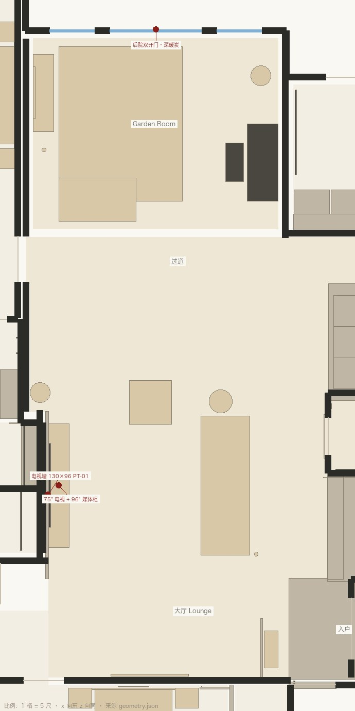
大厅（Family 翼） · 平面 — 本区位置与各房间名称；细节看效果图。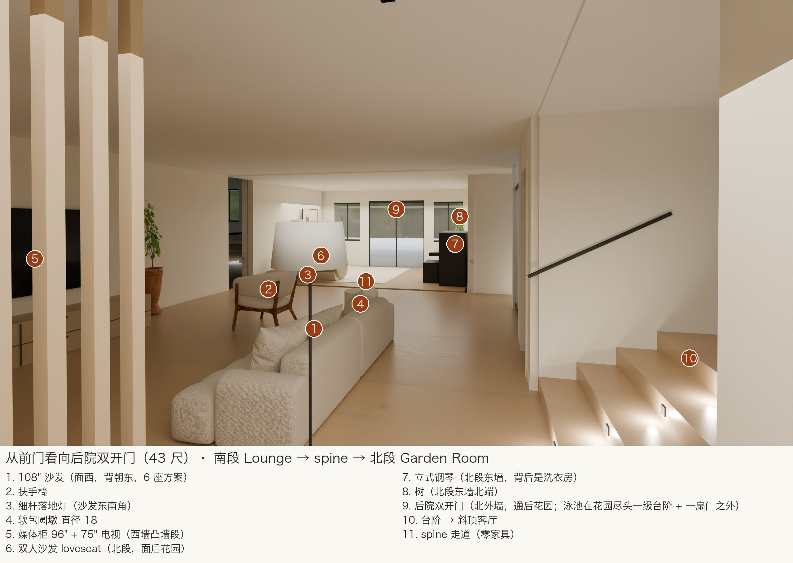
从前门看向后院双开门（43 尺） — 近：Lounge；中：空走道 + 天井角；远：Garden Room；右：台阶上客厅；视线上最高 31" 沙发背。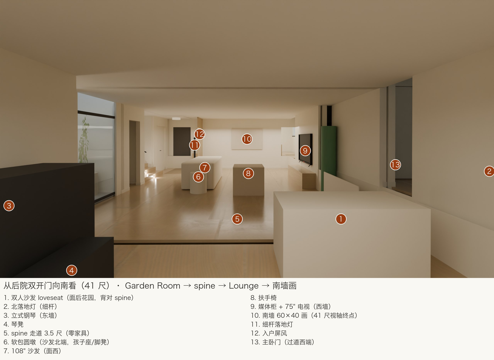
从后院双开门向南看（41 尺） — 前：Garden Room（双人沙发、地毯、西墙玩具矮柜、东墙钢琴）；中：空走道；远：Lounge（108" 沙发、扶手椅、电视墙）；尽头南墙画。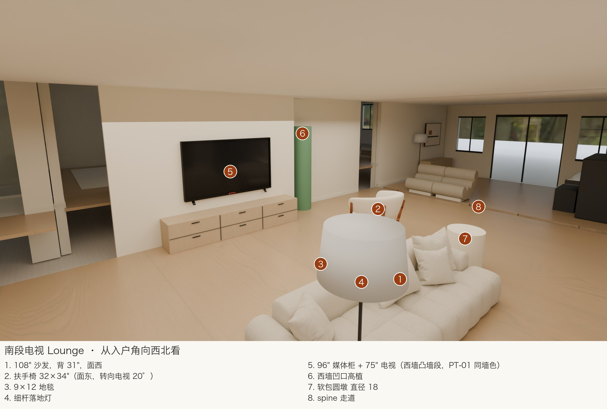
南段电视 Lounge — 108" 沙发面西；扶手椅；地毯；细杆落地灯；96" 媒体柜 + 75" 电视在凸墙段；西墙凹口高植；圆墩贴沙发北端；筒灯 x 22.0 列（图内"PT-05"为旧示意，电视墙 PT-01）。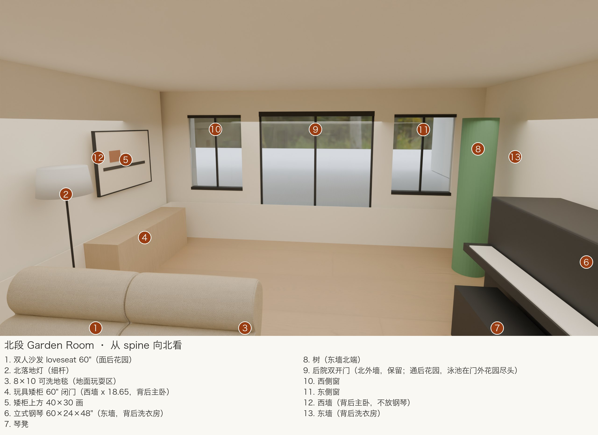
北段 Garden Room — 60" 双人沙发面后花园；8×10 地毯；西墙 60" 玩具矮柜 + 画；东墙钢琴（背后洗衣房）；树；落地灯；北墙 6068 双开门 + 两侧窗。本区要点
- 电视墙：西墙凸墙段 130"×96"，PT-01 同墙色；段中点 42" 电视插座 + 低压线管；墙内承重带 36–60"。
- 后院双开门：既有 6068，内外深暖炭 Iron Ore，黑 lever。
5 · 壁炉客厅（人字顶）
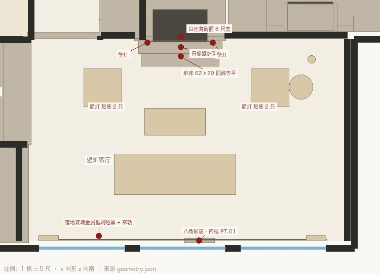
壁炉客厅（人字顶） · 平面 — 本区位置与各房间名称；细节看效果图。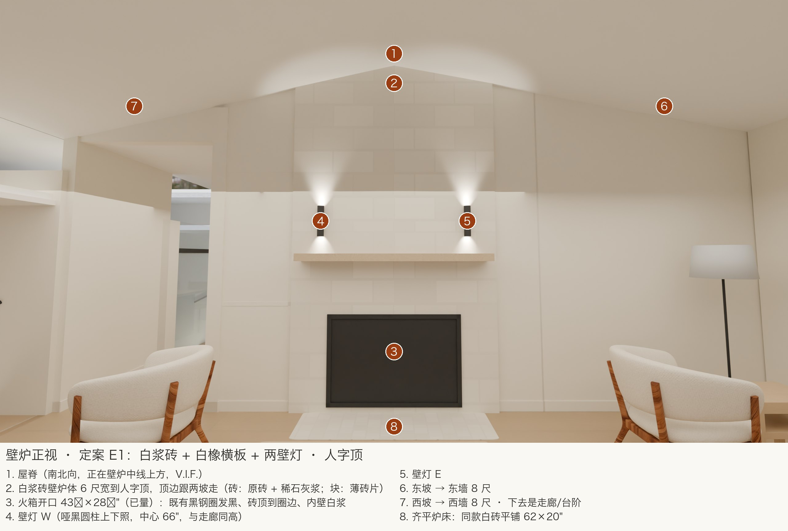
壁炉正视 — 白浆薄砖 6 尺宽到人字顶、顶边随两坡；黑钢圈保留、砖顶到圈边；白橡浮板架 66×10×2½" 顶 54½"；哑黑圆柱壁灯 ×2 中心 66"；齐平炉床同砖。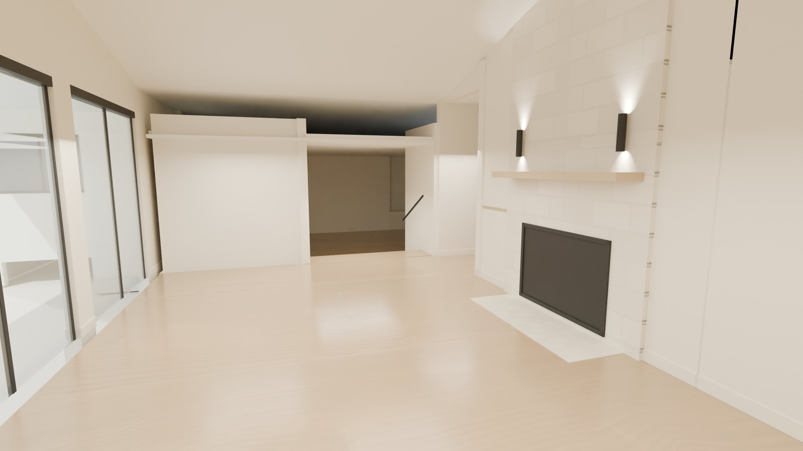
客厅摆场 · 从东侧看 — 沙发朝北面壁炉；阅读椅 ×2 夹壁炉；西北口见大厅电视墙。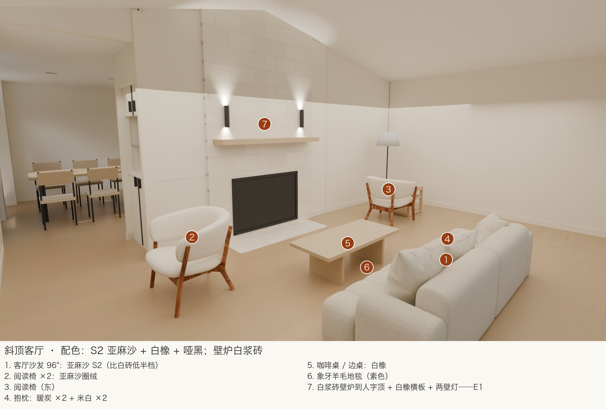
客厅摆场 — 沙发离玻璃门 ≥3 尺；象牙地毯；白橡茶几 / 边桌（渲染深色鼓桌为代用）；细杆落地灯；无电视。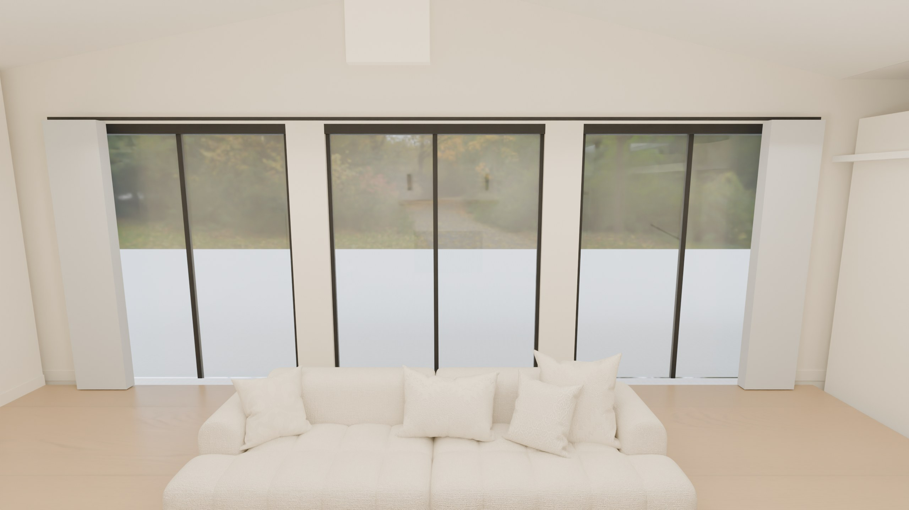
南玻璃墙（纱帘拉开） — 三联玻璃框哑黑；门头下 18 尺哑黑细轨；两端各一叠到地亚麻纱帘；八角窗在山墙上方（图外）。本区要点
- 壁炉面：客厅面 6 尺宽到人字顶贴 2⅝×8" 白坯薄砖片 + 白浆；背面与两侧返面 PT-01，无砖。
- 火箱 / 炉床：既有黑钢圈保留（耐高温哑黑），开口 43½×28¼"；炉床 62×20" 同砖平铺，与白橡地板齐平。
- 壁炉架：白橡浮板 66×10×2½"，顶面 54½"，固定件零可见。
- 灯：壁灯 ×2 哑黑圆柱上下照，砖面中心 66"、盒面齐砖面；筒灯 ×4 每坡 2 只对称屋脊，脊线无孔。
- 南墙落地玻璃：玻璃保留；金属框刷哑黑 PT-04 Tricorn Black；框上方装一根 18 尺哑黑细帘轨，紧贴门头。
- 八角彩玻：保留，内框 PT-01。
6 · 厨房
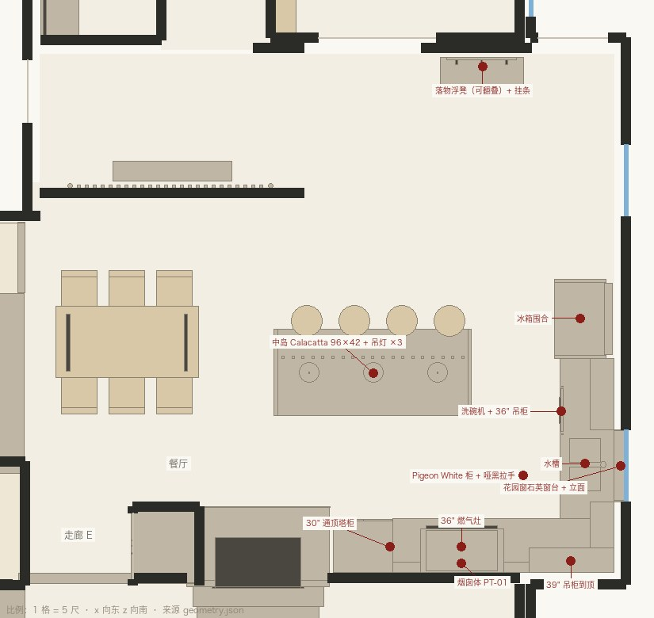
厨房 · 平面 — 本区位置与各房间名称；细节看效果图。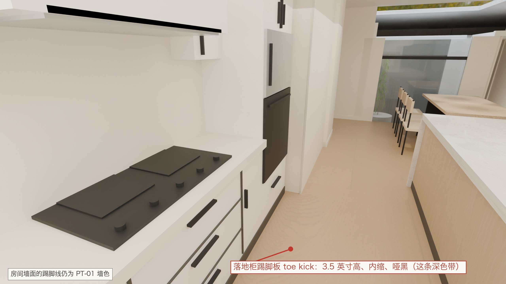
灶墙细部（中岛北侧向南看） — 右：30" 通顶塔柜（15" 烤盘抽 → 壁挂烤箱 → 内嵌微波 + 原厂框 → 顶柜两门，门面齐基柜）；16" 抽拉柜；36" 五头顶控灶在三抽基柜上；42" 烟机柜同柜板到顶、机口底沿退 ½"；左：吊柜连到烟机柜 + 灯檐；素面暖白石英到吊柜底；平板门 + 哑黑一字拉手 + 哑黑内收踢脚；白橡地板。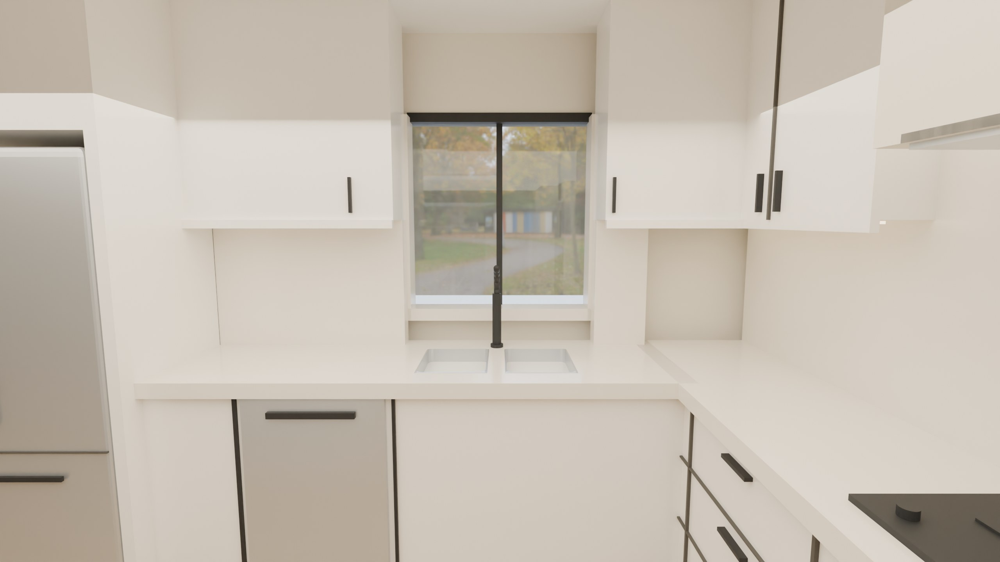
水槽花园窗石龛（中岛东端向东看） — 东墙石英台面到吊柜底 60"；4" 石英立面 + 12" 石英窗台一体；窗洞两侧 2cm 石英返贴到窗头；窗头以上留白；黑框。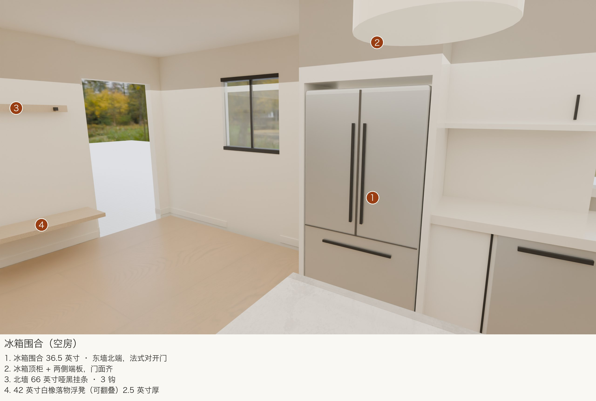
冰箱围合（空房） — 冰箱在东墙北端；北窗全窗可见；窗与冰箱之间 30" 留白墙；左：北墙 66" 哑黑挂条 + 42" 白橡落物浮凳（可翻叠）。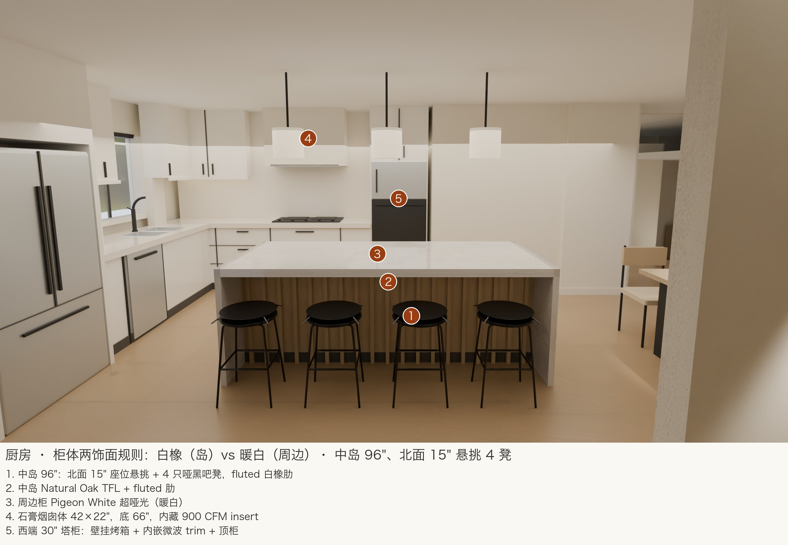
厨房配色 — 中岛白橡；周边暖白；吧凳哑黑架 + 白橡座（渲染全黑为代用）；西端 30" 塔柜 = 烤箱 + 微波 + 顶柜（渲染吊柜顶亮带为旧示意，吊柜顶无灯）。本区要点
- 中岛：Calacatta 3cm 台面 96×42"，柜体 96×27" Natural Oak TFL 平板、板纹竖向；两端瀑布石板一直落到地；南面（朝灶墙那侧）台面与柜体齐平，是做饭面，全抽屉；北面台面多伸出 15"，底下是空的，放 4 只吧凳；悬挑支撑由石材加工商出具，外部零可见。
- 中岛吊灯 ×3：乳白罩吊线款，居中、间距 32"，罩底在台面上 32"。
- 灶墙自西向东：30" 通顶塔柜（烤盘抽 → 壁挂烤箱 → 内嵌微波 → 顶柜）→ 16" 抽拉柜（上方 16" 吊柜底 60" 到顶）→ 36" 燃气灶 → 42" 柜板烟机柜（Pigeon White 同柜板，底 66" 到顶，机口退 ½"）→ 52" 吊柜到顶：台面以上一条连续柜线到顶，无石英缝。
- 灯带：所有吊柜底灯带藏灯檐后。
- 周边柜：Pigeon White 超哑光 TFL 平板 + 哑黑一字拉手；台面与通高背板素面暖白石英。
- 踢脚板：厨房所有落地柜（灶墙基柜、塔柜、东墙基柜、水槽柜、中岛柜）底部踢脚板 3½" 高、内缩约 3"、哑黑；吊柜与转角吊柜不落地，无踢脚板。
- 花园窗：屋外部分——窗框与窗箱底板（凸出屋外的底面）喷哑黑；室内部分——窗台铺 3cm 石英（12" 窗台 + 4" 立面一体），两侧 2cm 石英返贴到窗头，室内看不到金属。
- 北墙：42" 白橡落物浮凳（可翻叠）+ 66" 哑黑挂条 3 钩。
7 · 餐厅与天井
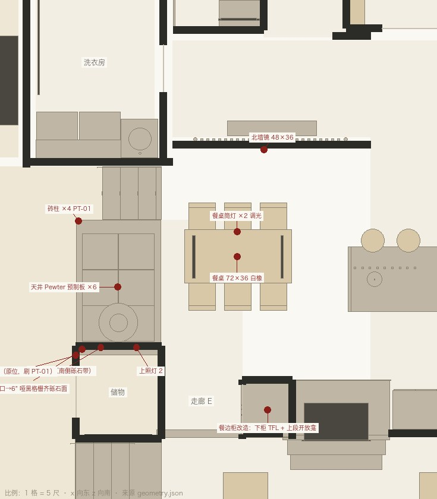
餐厅与天井 · 平面 — 本区位置与各房间名称；细节看效果图。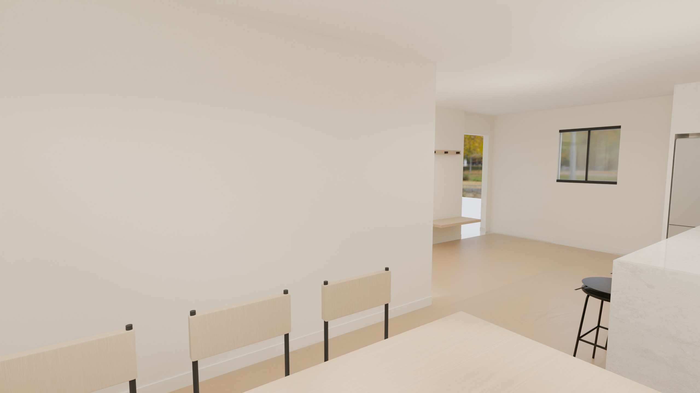
餐厅北墙（从餐桌向东北看） — 整面 PT-01 留白（原 48×36 镜撤销；渲染中的镜为旧示意）；右：过道尽头的落物浮凳 + 挂条、书房窗；墙 PT-01。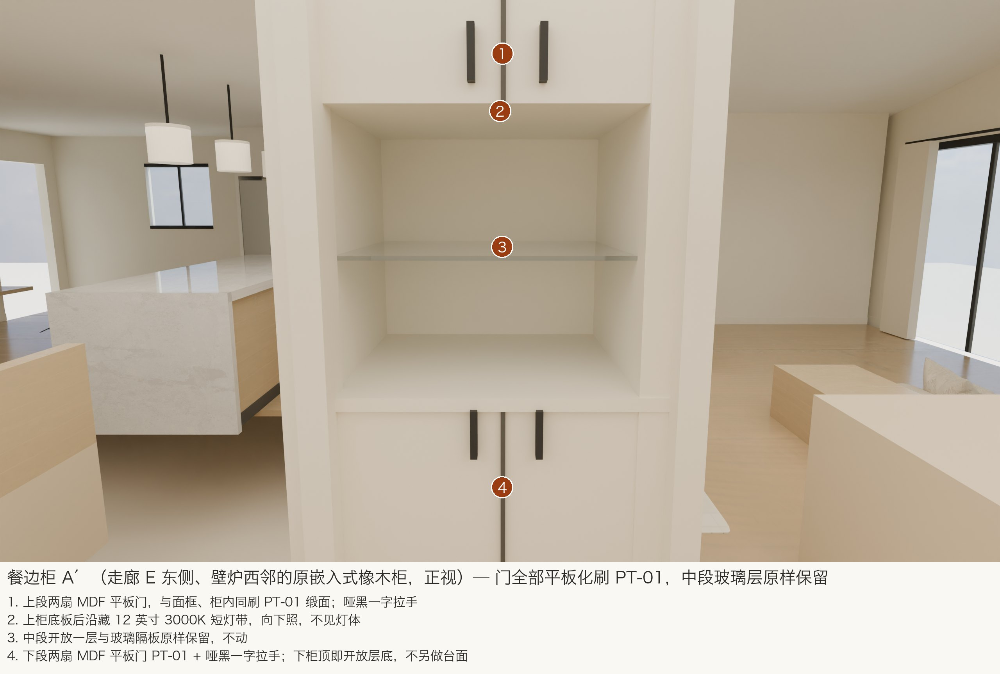
餐边柜（原嵌入式橡木橱柜，正视） — 上下两段 MDF 平板门 + 哑黑一字拉手，门 / 面框 / 柜内同刷 PT-01；中段开放一层与玻璃隔板原样保留，上柜底藏灯带向下照；左：壁炉背面 PT-01 平墙。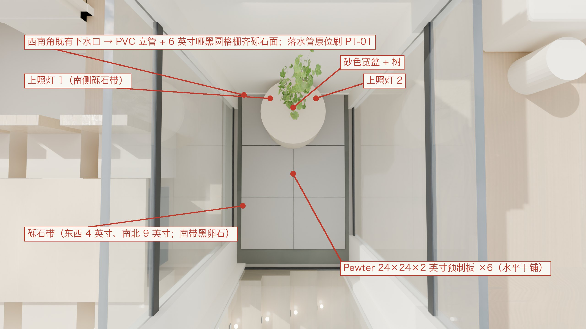
天井 · 俯视 — Pewter 24×24 预制板 ×6 居中；四边砾石带；砂色宽盆 + 一株多干真树放板上；四边黑卵石带；上照灯 ×2 在南侧卵石带、井中线左右各 12 英寸；玻璃框哑黑。本区要点
- 餐边柜（原嵌入柜）：柜体保留；上下两段凸框木门全部换 ¾" MDF 平板门（沿用原铰），门、面框、柜内 PT-01 缎面 + 哑黑一字拉手 ×4；中段开放一层与玻璃隔板原样保留；上柜底板后沿藏 12" 3000K 短灯带向下照。
- 天井：Pewter 24×24×2" 预制板 ×6 水平干铺 + 四边黑色墨西哥卵石带；砂色宽盆 + 一株多干真树；砖柱 ×4 PT-01；12V 哑黑上照地插灯 ×2。
- 天井排水：西南角既有下水口保留，接 PVC 立管到砾石面，顶 6" 哑黑圆平格栅与砾石齐平、可手掀，立管底开渗水槽；井底向西南角找坡；落水管原位保留、刷柱色 PT-01，管口离格栅 2–4" 开敞直落。
8 · 走廊与洗衣房
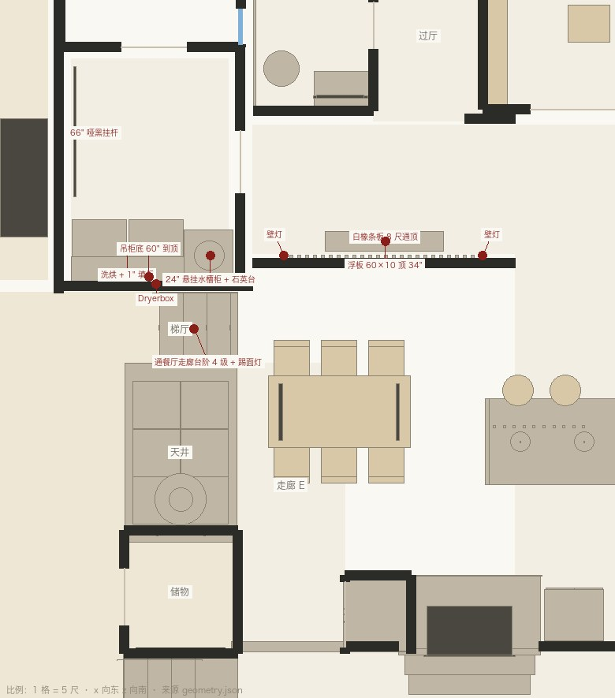
走廊与洗衣房 · 平面 — 本区位置与各房间名称；细节看效果图。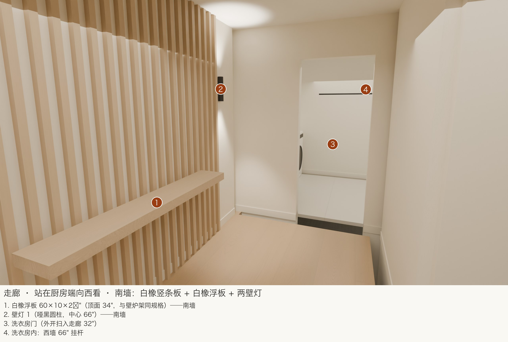
走廊 · 厨房端向西看 — 南墙 8 尺通顶白橡竖条板；板前 60×10×2½" 白橡浮板（顶 34"）；条板两侧哑黑圆柱壁灯 ×2（中心 66"）；尽头洗衣房门；墙另一侧 = 餐厅北墙。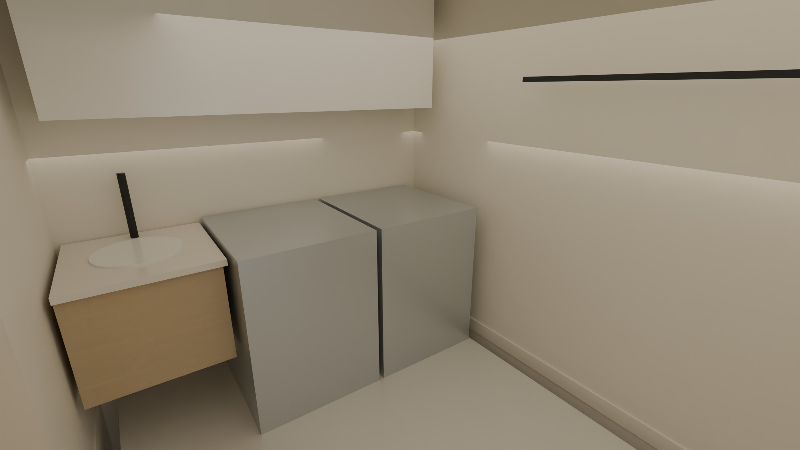
洗衣房 · 从门角看 — 东端 24" 白橡悬挂水槽柜 + 石英台 + 哑黑细杆龙头；洗烘 ×2 并排在南墙（渲染为灰色方块代用）；吊柜底 60" 到顶；西墙 66" 哑黑挂杆；无灯带（吊柜下亮带为渲染补光）。本区要点
- 走廊条板：南墙 8 尺宽白橡条板通顶（与屏风同做）；前方白橡浮板 60×10×2½" 顶 34"；两侧哑黑圆柱壁灯中心 66"，条板前无顶灯。
- 洗衣水槽柜：24" 悬挂闭箱，柜底 15"，白橡平板 + 哑黑拉手，石英台只做在水槽柜上；排水墙出 18–20"。
- 洗烘位：两侧 1" 暖白填板；Dryerbox 嵌墙排气箱；吊柜底 60" 到顶整墙。
- 其他：66" 哑黑挂杆西墙；地砖 Andover 12×24；三面岩棉。
9 · 主卫
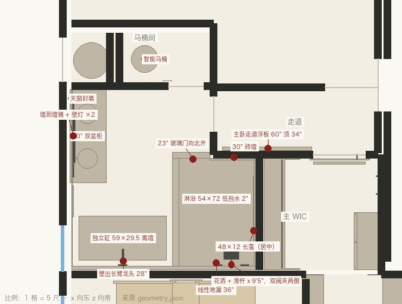
主卫 · 平面 — 本区位置与各房间名称；细节看效果图。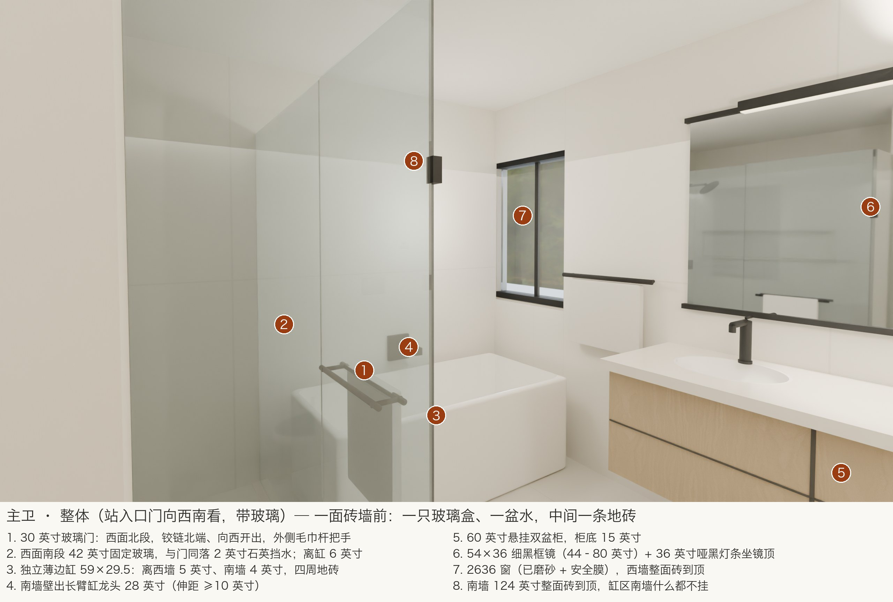
主卫 · 整体（入口门看，带玻璃，带标识） — 左：西墙 60" 悬挂双盆柜 + 54×36 细黑框镜（44–80"）+ 36" 灯条坐镜顶；正前：独立缸 59×29.5 摆在窗下、四周地砖、南墙壁出长臂龙头；右：54×72 玻璃盒淋浴，西面 = 北段 30" 玻璃门向西开出 + 南段 42" 固定玻璃，北面 23" 固定片 + 30" 砖墙落 2" 挡水，顶 80"；缸与玻璃之间 6"。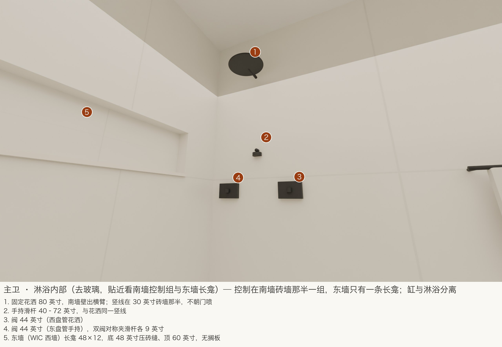
主卫 · 淋浴内部（去玻璃，从盆柜端看进去，带标识） — 南墙砖墙那半一组：固定花洒 + 滑杆一条竖线（x≈9'5½"），一块圆阀面板 44" 在滑杆西侧；东墙只有一条 48×12 长龛（底 48" 顶 60"，无搁板）；2" 石英低挡水、地砖连铺进盘；36" 线性地漏贴南墙；左：独立缸离墙。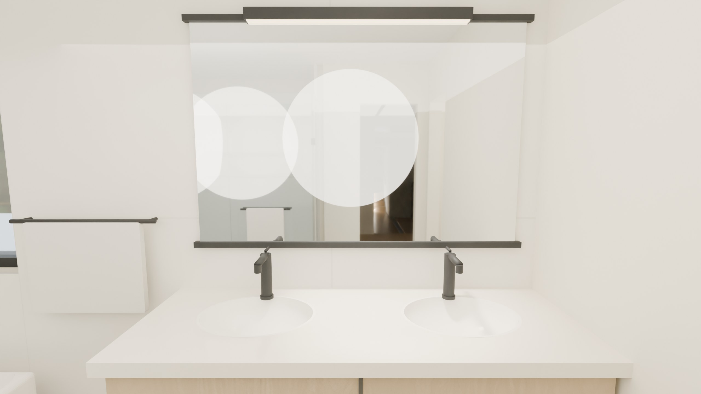
盆柜与镜（向西看，带标识） — 60" 白橡悬挂双盆柜（底 15"）；暖白石英台；54×36 细黑框镜居中、底 44" 顶 80"（西墙整面砖）；36" 哑黑灯条坐镜顶；盆上天窗封填。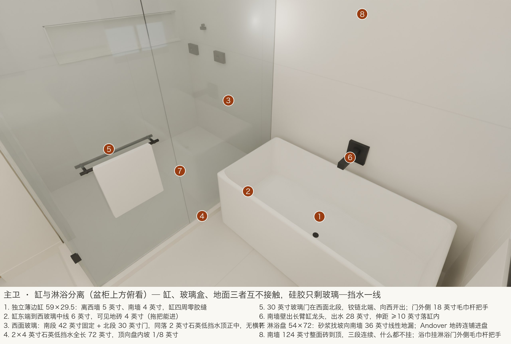
缸 · 留白 · 玻璃盒（盆柜上方俯看） — 独立缸 59×29.5 离西墙 5"、离南墙 4"；缸到西玻璃中线 6"、可见地砖 4"；72" 西玻璃整片落 2" 挡水、无缺口；玻璃门在西面北段向西开；缸四周零胶缝。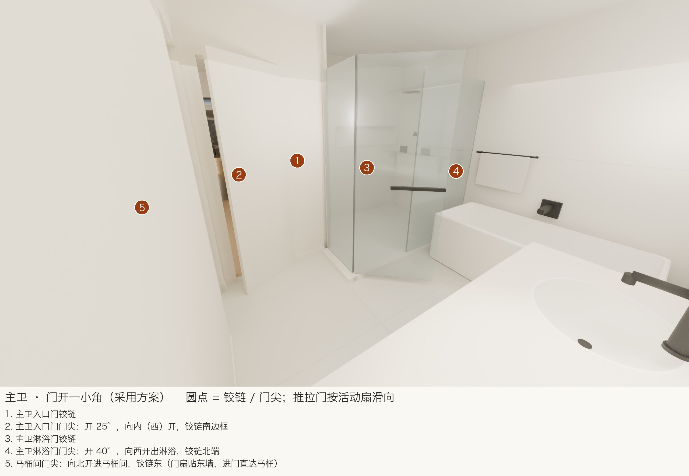
主卫 · 门半开（对准淋浴，采用方案，带标识） — 淋浴 30" 玻璃门开 65° 向西开出、铰链北端（门上哑黑毛巾杆把手）；左：入口门 2068 开 45° 向内（西）、铰链南；马桶间门（画外）向北开、铰链东。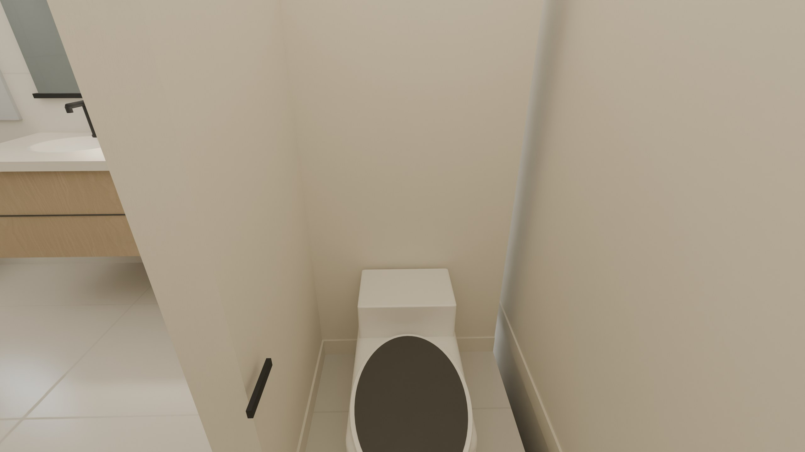
马桶间（门口向西看） — 智能马桶靠西墙面朝东；四面全高全高浴室级 PT-01；哑黑纸架 26"；筒灯 1（感应）+ 独立排风。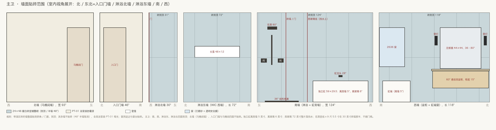
主卫 · 四面墙贴砖范围（室内视角展开） — 蓝灰 = 24×48 暖白砖到顶，米色 = 全高浴室级 PT-01：南墙、西墙、淋浴东墙、淋浴北面 30" 墙整面到顶；北墙（马桶间墙）与入口门墙为干区墙面；红字为各墙物件位置与高度。本区要点
- 缸：独立矩形薄边亚克力缸 59×29.5"，东西向摆在南墙窗下：离西墙 5"、离南墙 4"、到淋浴玻璃中线 6"；地砖连铺到缸下，缸四周不打胶；排水按型号到场定位。
- 缸龙头：南墙壁出两柄长臂圆柱嘴缸龙头，哑黑；在缸中线 x≈3'4½"，出水口中心 = 缸沿 +4–6"（约 28"），伸距 ≥10" 落缸内。
- 淋浴 54×72：x 6'4"–10'10" × z 22'4"–28'4"（东墙 = WIC 西墙）；2"×4" 素面石英低挡水两段：西玻璃线 72" + 门线；西面 = 北段 30" 玻璃门向西开出（铰链北端，门外侧 18" 毛巾杆式把手）+ 南段 42" 固定玻璃，同落挡水顶正中；北面 = 23" 固定玻璃片 + 30" 砖墙；门净口 30"（CPC 411.6）；玻璃顶 80"；地砖 Andover 12×24 连铺进盘内；36" 哑黑线性地漏沿南墙居中；门外地面水平。
- 花洒 / 阀：全部在南墙砖墙那半：固定花洒 80"（16" 直臂 8⅝" 圆头）、手持滑杆 40–72" 同一竖线 x≈9'5½"；一块圆阀面板 44" 在滑杆西侧 9"（SR SUN RISE 12" 整套，单杆 + 三路分水，顶喷 / 手持可同开）。
- 壁龛：东墙靴南端（花洒端）一条长龛 48"W×12"H，底 48" 顶 60"，净深 4½"；无搁板、无灯；东墙无其他物件。
- 盆柜墙：盆上天窗封填；60" 悬挂双盆柜柜底 15"；54×36 细黑框镜居中双盆柜，底 44" 顶 80"；36" 哑黑灯条坐镜顶（底 80"），与其他卫生间同款。
- 墙砖：24×48 暖白竖铺到顶：南墙、西墙、淋浴东墙、淋浴北面 30" 墙整面；北墙（马桶间墙）、入口门墙与马桶间四面为全高干区墙面（做法见 §1 四卫干区墙面）。
- 马桶间：净约 63"×36"；HOROW T05 靠西墙、面朝东；南墙 2068 实芯门向北开；南墙马桶右手哑黑纸架中心 26"；筒灯 1（感应）+ 排风 110 CFM。
10 · Bath2 · Bath3
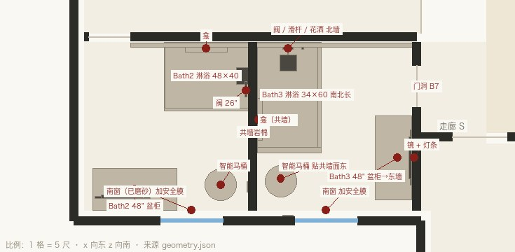
Bath2 · Bath3 · 平面 — 本区位置与各房间名称；细节看效果图。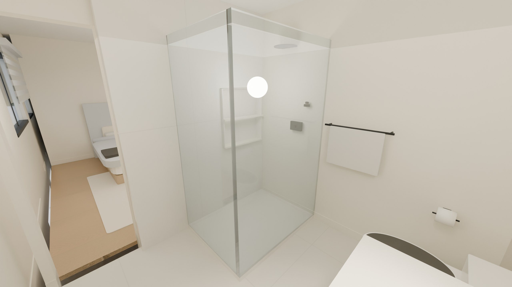
Bath2 · 整体（西南角看，带玻璃） — 右前：东北角 48×40 淋浴、半无框哑黑推拉门；右：智能坐便；门北墙；砖只在淋浴到顶，干区 PT-01。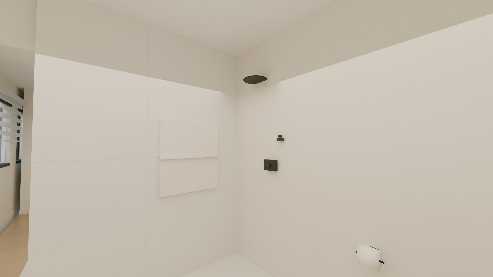
Bath2 · 淋浴内部（推拉门滑开 2/3，带玻璃） — 东扇向西滑到西扇外侧、开口在东端（阀侧）；东墙（共墙）一块圆阀面板 44"、手持滑杆、80" 壁出固定花洒；玻璃线以南东墙 24" 毛巾杆 48"（出淋浴左手）；北墙中跨 24×28 龛底 34" 顶 62"、搁板落 48" 缝；Andover 地砖连铺；2" 低挡水石英盖板。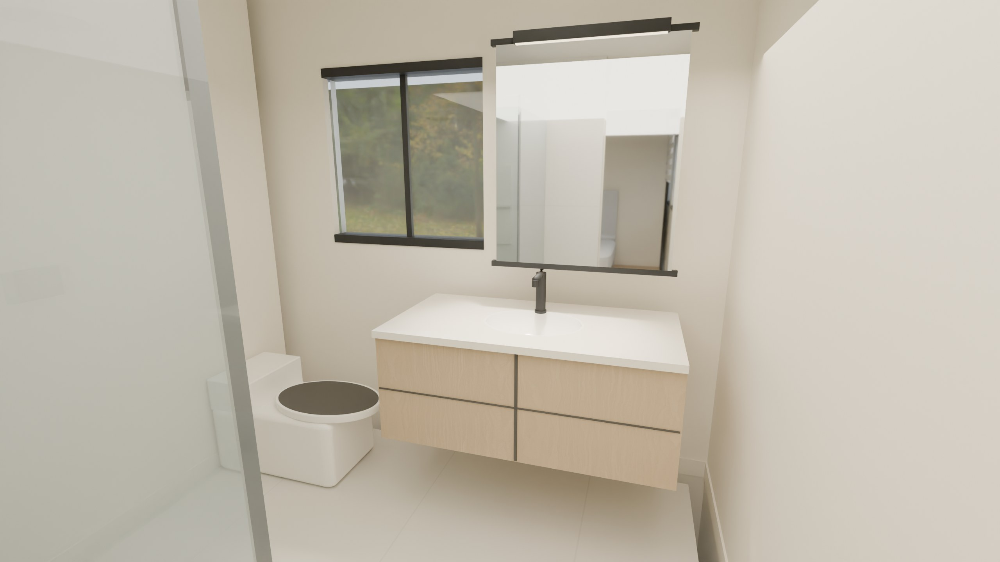
Bath2 盆柜（门口向南看，带玻璃） — 48" 白橡单盆柜；盆 + 30×36 镜（44–80"）向西偏置避开南窗；24" 哑黑灯条坐镜顶；右：西墙 24" 洗脸毛巾杆 48"；左：48×40 淋浴半无框推拉门、砖到顶。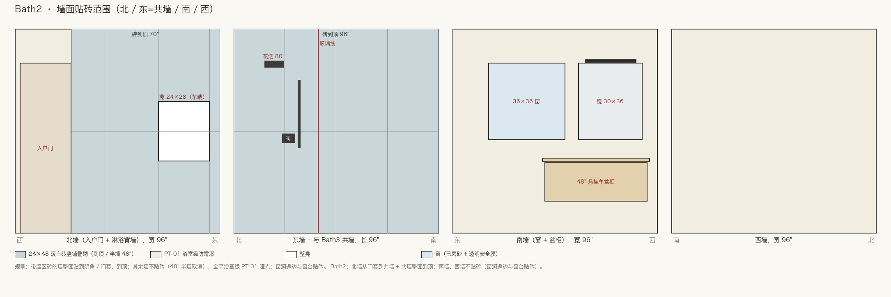
Bath2 · 四面墙贴砖范围 — 淋浴 48×40 在东北角：北墙东段 50" + 共墙北段 40" 砖到顶，其余三面全高浴室级 PT-01；龛 24×28 在北墙砖段。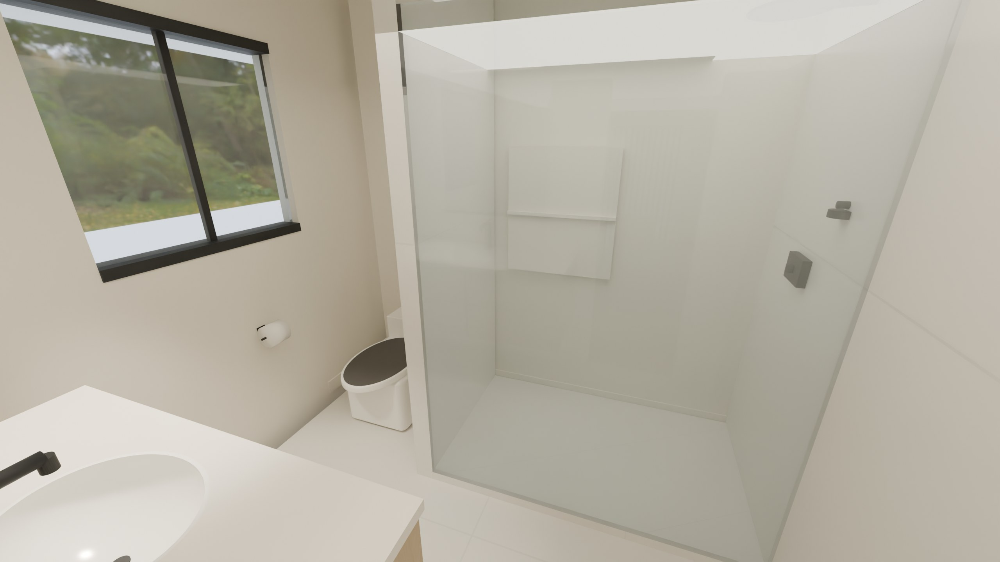
Bath3 · 整体（东墙门口向西南看，带玻璃） — 右：34×60 南北长淋浴贴共墙、玻璃面朝东、60" 半无框推拉门，北墙玻璃线以东 24" 毛巾杆 48"；正前：马桶贴共墙面朝东；左手：东墙 48" 单盆柜 + 30×36 镜 + 灯条；门洞按建筑图 B7。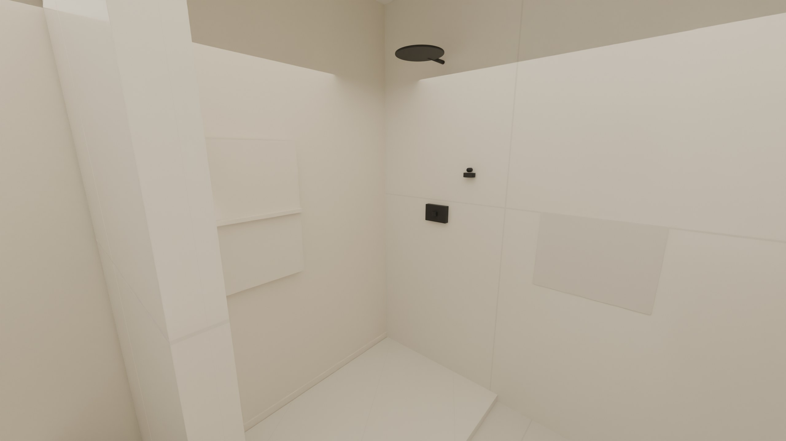
Bath3 · 淋浴内部（推拉门滑开 1/3，带玻璃） — 北扇向南滑到南扇外侧、开口在北端（阀侧、正对房门）；北墙一条竖线：固定花洒 80"、滑杆、一块圆阀面板 44"；共墙 24×28 龛 + 石英搁板；盘 34×60 南北长。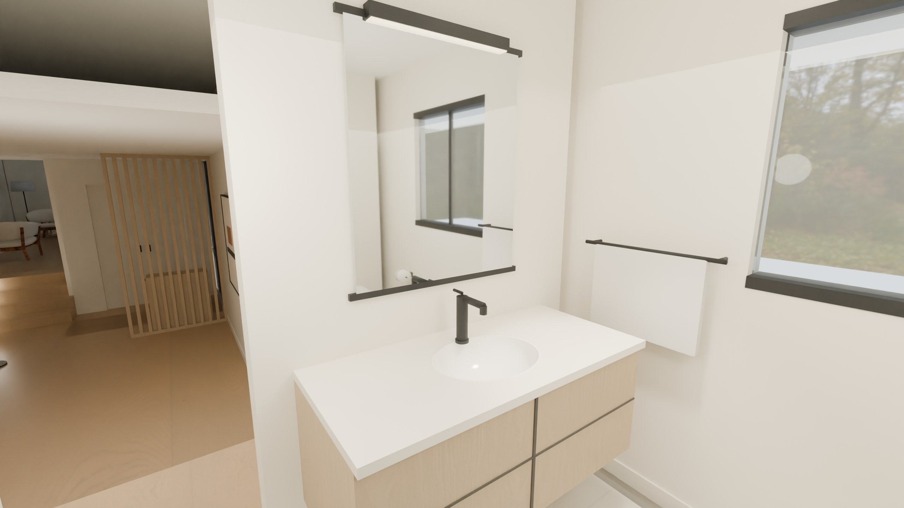
Bath3 盆柜（门内向东南看） — 48" 白橡悬挂单盆柜在东墙门洞以南，盆柜全幅入镜；30×36 细黑框镜挂 44–80" + 24" 哑黑灯条坐镜顶；右：南墙既有磨砂窗 + 窗东侧 24" 洗脸毛巾杆 48"；左：门洞外走廊。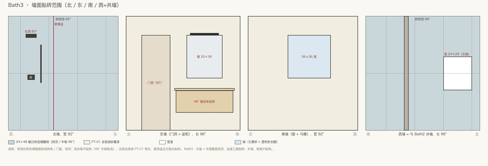
Bath3 · 四面墙贴砖范围 — 淋浴 34×60 贴共墙：共墙 60" 段 + 北墙 34" 段砖到顶，南端返墙朝淋浴一面贴砖，其余全高浴室级 PT-01；龛 24×28 在共墙砖段。本区要点
- Bath2 淋浴：48×40 东北角贴共墙，玻璃面朝南 + 西侧 40" 固定返板，2" 素面石英低挡水，48" 半无框哑黑推拉门顶轨 76"（门净开口 ≥22"）；阀在共墙 44"、中心距北墙 26"。
- Bath3 淋浴：改南北长 34×60，贴共墙从北墙到 z 46'0"；2" 素面石英低挡水；阀 44" 与固定花洒 80" 在北墙同一竖线（淋浴中线 x≈10'2"），滑杆在阀东 8"；龛 24×28 在共墙（z 43'8"–45'8"）。
- Bath3 换位：48" 盆柜改东墙门洞以南，30×36 镜（44–80"）+ 24" 灯条随到东墙；马桶贴共墙面朝东，中心距南墙 16"、距淋浴返墙砖面 ≥15"（门洞位置先量，B7）。
- 共墙：全高岩棉；两淋浴各自 ½" 支管。
- 壁龛 ×2：24×28、底 34" 顶 62"，石英搁板落 48" 缝；都靴花洒端：Bath2 北墙东端跨（x 6'1"–8'1"），Bath3 共墙北端 z 41'7"–43'7"。
- 南窗 ×2：既有磨砂玻璃保留，加透明安全膜；窗洞返边贴墙砖余料，无木窗台。
- 墙砖：Bath2 北墙（从门套到共墙）+ 共墙整面到顶；Bath3 北墙 + 共墙整面到顶、返墙三面贴砖；其余墙为全高干区墙面（见 §1 四卫干区墙面）；窗洞返边与窗台贴砖。
11 · Bath4
Bath4 · 平面 — 本区位置与各房间名称；细节看效果图。
Bath4 · 整体（从盆柜角向北看，带移门） — 北端 60×30 缸三面砖到顶，8mm 无框玻璃移门 + 哑黑顶轨 80"（活动扇东端，外侧自带毛巾杆 48"）；右下：东墙 24" 毛巾杆 50"（浴巾 + 洗脸毛巾）；透过玻璃：北长墙东端 Kerdi 12×20 预制龛（靴花洒），东端墙固定花洒 / 阀 44" / 缸出水嘴；右：东墙房门。Bath4 · 缸区内部（去移门，从盆柜侧向北看，带标识） — 北长墙东端 Kerdi 12×20 预制龛（靴花洒）（底 28½" 顶 48½"，龛底石英）；东端墙自上而下：固定花洒、阀 44"、缸出水嘴；缸排水东端。Bath4 盆柜与马桶（从缸端向南看，去移门） — 盆柜与马桶并排靴南墙、都面朝浴缸：东端 24" 白橡悬挂单盆柜（柜底 15"）+ 24×36 细黑框镜（44–80"）+ 24" 哑黑灯条坐镜顶；马桶在盆柜西侧，中心距西墙 17"、距盆柜 17½"；纸架在西墙砖面、马桶左手、卷心在马桶前沿前约 8"、26"；左上：西墙窗；右：东墙房门（内开，90° 限位）。
Bath4 · 四面墙贴砖范围 — 缸区三面（北长墙 61" 整面 + 东、西端墙各 29" 到移门面）砖到顶，其余全高浴室级 PT-01；Kerdi 预制龛在北长墙东端（靴花洒）。
本区要点
- 缸：60×30 北端，排水东端；8mm 无框移门哑黑顶轨顶 80"，活动扇东端。
- 阀 / 花洒 / 出水嘴：东端墙；过厅侧 12×12 隐框检修板 PT-01；西端外墙零穿孔。
- 壁龛：Kerdi-Board 12×20 预制，北长墙东端（靴花洒），底 28½"。
- 盆柜 / 镜：30" 悬挂单盆柜柜底 15"；24×36 细黑框镜挂 44–80" + 24" 哑黑灯条底 80"（坐镜顶）。
- 砖 / 灯：缸背长墙、西墙整面 + 东墙到门套 24×48 到顶；盆柜墙与东墙门南段为全高干区墙面（见 §1 四卫干区墙面）；湿区筒灯 1 + 一般 1；排风 110 CFM。
12 · 主卧与主 WIC
主卧与主 WIC · 平面 — 本区位置与各房间名称；细节看效果图。
主卧（西南角回望床） — King 床头靴东墙居中、床轴对西窗；白橡床头板 100×48"（东墙唯一一个动作，床头上方不挂画、无壁灯）；三层床品：S1 燕麦奶米白被套 + 睡枕 2 + king shams 2、床尾一条 S3 暖炭毯；白橡单抽床头柜 ×2 + 黑体白罩台灯 ×2；9×12 象牙地毯；左手北墙整墙 S1 亚麻帘，滑门东半拉上一片。主卧 · 进套房门第一眼（右转向北） — 走道北墙已拆（建筑图 A2），原走道 + 东南凹位并入主卧成 L 形；正前北墙 13 尺玻璃（花园滑门 + 两窗）配整墙到顶 S1 亚麻帘（白吊顶轨，开帘时两叠各 30" 贴两端墙）；左前西墙窗北侧一幅 24×36 竖幅线稿（中心 57"）；左远西南角一株真树 + Ø18" 哑黑盆；右手床侧三层床品。主卧 · 从床上向南看短腿（前厅，带标识） — 8'9"×7'4" 的短腿留空：南墙 48×10×2½" 白橡浮板顶 34"（两端离主卫墙 / 衣帽间门套各 7"）、衣帽间门 3068、西端主卫门 2068、东墙套房门 3068（铰链北）；天花一张筒灯网格、墙 PT-01、白橡地板连铺。
主衣帽间 · 从门内向东南看（门边挂钩、梳妆墙、南翼；省略西墙杆上衣物） — 右手东墙梳妆墙（四抽塔 + 层板柱 + 48" 台面）；左手西墙双层杆；喉口直望端墙 24×65 全身镜；筒灯 ×3。主衣帽间 · 西墙双层杆（从门内东北角向西南看，右远处是南翼端墙全身镜，便于认方位） — 整面双层哑黑圆杆 40"/80"，中层板 42"、顶板 84"，三块立板分两跨各约 36"，深 24"；背面是主卫淋浴东墙，48–60" 龛带内不钉件。主衣帽间 · 东墙梳妆墙（图中省略西墙杆上衣物）— 南段 38"：18" 四抽塔顶 48" + 20" 开放层板柱 12/24/36" + 48" 台面通长 + 上层板 66" / 84"（60"→66" 消台面阴影），16" 深；北段 36" 为门扇停靠区，挂钩 ×2 @66"。
主衣帽间 · 北墙与门 — 3068 门铰链东侧、开足停靴东墙北段；S15 感应开关在门西 48"；门套与墙同 PT-01。主衣帽间 · 南翼 — 东墙长衣单杆 66" + 78" 层板；西墙 12" 鞋层板 ×6；端墙 24×65 细黑框全身镜中心对南翼走道中线。主衣帽间 · 从镜前回望门口 — 10.8 尺直线：喉口两侧鞋层板与长衣杆，北段两侧双层杆与梳妆墙，尽头门洞。
门（主衣帽间门，前厅看） — 80" 平板门（WIC 门空芯、卧室门实芯，外观同）+ 2¼"×¾" 平板门套；门 / 套 / 墙 PT-01（门缎面、墙哑光）；3½" 踢脚撞门套、无 shoe；哑黑 lever 38"；门头 80" = 窗头。窗（主卧西窗） — 窗框内侧 PT-04 哑黑；无木窗套 / 木窗台，石膏返边 PT-01；Linen Cream 卷帘 + 同色布包方帘头，框上 3"、两侧盖框 2"；3½" 踢脚；窗头 80"。主衣帽间 · 南翼西墙鞋层板（细部） — 12" 深暖白三聚氰胺层板 ×6，板顶 12 / 24 / 36 / 48 / 60 / 72"，两端 ¾" 立板到 73"；跨 50"、每层约 4 双；对面是东墙长衣杆，尽头端墙全身镜。
本区要点
- 床头板：100×48" 白橡平板顶 48"，墙内承重。
- 主卧浮板：48×10×2½" 白橡，主卧短腿南墙（原走道）WIC 门西侧居中 x 9'3"–13'3"，顶面 34"。
- 西窗：框内侧 PT-04 Tricorn Black；Linen Cream 卷帘 + 同色布包帘头（框上 3"、盖框 2"）。
- 主 WIC：暖白三聚氰胺 + 哑黑杆；门铰链在东侧、门扇开足停靠东墙。西墙整面 74½" 双层杆 40"/80"（深 24"，中立板一道分两跨，中层板 42"、顶板 84"）；东墙南段 38"（z 25'5"–28'7"）一组 16" 深梳妆墙：南端 18"W 四抽塔顶 48"、北侧 20" 开放层板 12/24/36"、48" 台面通长、其上层板 66" / 84"；东墙北段 36" 为门扇停靠区，只挂哑黑挂钩 ×2 @66"；北墙门西留感应开关；过道净 36½"。南翼：东墙长衣单杆 66"（杆长 49½"，深 24"，78" 层板）；西墙 12" 深层板 ×6（12"–72"）；端墙 24×65 细黑框全身镜，中心对南翼走道中线（x≈15'10"），底 15" 顶 80"。柜内无灯。西墙（淋浴背墙）不钉件进 48–60" 龛带；不设检修板。
- 隔音：主卫—主卧墙岩棉。
13 · Bed2 · Bed3 · Bed4 · 书房
Bed2 · Bed3 · Bed4 · 书房 · 平面 — 本区位置与各房间名称；细节看效果图。
Bed2 — Twin ×2 床头靴北墙并排，中间共用白橡床头柜 + 台灯；米白亚麻软包床头 ×2（顶 48"，直边无钉扣）；可机洗象牙地毯；西窗 blackout 卷帘。Bed2 衣帽间 · 整体（从趟门口向东看，带标识） — 60×44" 走入间：东背墙双杆 40" / 80"、杆离墙 12"、长 45"；墙 PT-01、板暖白、杆哑黑。Bed2 · 衣帽间门、全身镜与进门凹位（卧室内向东看，带标识） — 左：衣帽间趟门北侧 48" 墙段挂 24×65 细黑框全身镜（底 15" 顶 80"，面朝卧室，站在房里照）；中：衣帽间 48" 趟门开口；右：35×33" 进门凹位两墙留空、不挂东西；凹位两侧外角 bullnose。Bed3（客房） — Queen 床头靴北墙门东侧；床头柜 + 台灯 ×2；软包米白床头；东角带门衣柜（右）。Bed3 东角衣柜（门开，编号见图下） — 54" 开口一对 2/0×6/8 空芯平板门 + 哑黑一字拉手；内北墙双杆 40"/80"；南侧 12" 层板 ×5；背墙空；门洞两侧 2¼" 平板门套。Bed4（20'×9'5"，从东窗墙床头上方向西看，带标识） — Twin ×2 并排床头靴东窗墙、中间共用白橡床头柜 + 台灯；中段北墙 48" 书桌（上方竖幅线稿）；南墙门东侧 ≤30" 矮柜；8×10 地毯 ×1；左手西端衣柜趟门 + 南墙 24×65 全身镜；筒灯 ×4 一联 Diva（S18）；南墙 4 尺敞口改 3068 门（封 12" 墙）；无木窗台（渲染粗黑窗台为旧示意），石膏返边 PT-01。Bed4 · 南墙细部（从东北角向西南看，带标识） — 西端衣柜趟门 ×2（顶挂、哑黑边拉手）；南墙西段 38" 墙上 24×65 细黑框全身镜；新 3068 实芯平板门；门东侧 48" 白橡矮柜。Bed4 西端衣柜（趟门开，编号见图下） — 既有 27" 深 89" 宽；双杆 40"/80" 各 79" 通跨 + 中托；27½"×16" 开放层板塔靴南端墙、伸到开口边；趟门见下图。Bed4 衣柜 · 趟门（半开） — 两扇顶挂趟门各 44½×80"，各走一条轨、都能滑：把前扇推到南半就露出北半的双杆，推到北半就露出南端层板塔，任一时刻开一半（图中前扇推向北、露出南半）；¾" MDF 平板 PT-01 缎面、无镜面无压条；哑黑顶轨、地面无轨、哑黑边拉手。
书房（雕花双开门内向西北看，带标识） — 72×24" 白橡书桌（白橡板面 + 两端板腿 + 室侧哑黑挡板）离北墙约 24"、中心对门轴，书椅在桌与墙之间、背靠北墙面朝门；椅后北墙 36×24 横幅线稿；西墙 80×12×84" 白橡开放书架：白橡侧板 / 顶板 / 背板 + 暖白层板 ×4，底两格白橡平板门 + 哑黑拉手（放打印机）；北墙 18" 插座 ×2 组 + CAT6 2 口；雕花门罩白。卧室卷帘（Bed2 西窗，放下六成） — Linen Cream 卷帘 + 布包同色方帘头，框上 3"、两侧盖框 2"（渲染横条纹为旧示意）。
本区要点
- Bed2 WIC：东背墙低杆 40" + 高杆 80"（杆离墙 12"）；南墙 12" 层板 ×5 只做西段 35"、东端离背墙杆线 ≥24"（不挡杆、不碰衣）；24×65 全身镜挂卧室内衣帽间趟门北侧的墙段（底 15" 顶 80"，面朝卧室）；进门凹位两墙留空；趟门空芯 PT-01 无镜面。
- Bed3 东角衣柜：54" 开口一对 2/0×6/8 空芯平板门 + 2¼" 平板门套 + 哑黑拉手；内双杆 40"/80"，12" 层板 ×5。
- Bed4：南墙 4 尺敞口封 12" 改 3068 实芯门；地面垫平到过厅标高、白橡连铺零收口；逃生窗垫高后窗台 ≤44"；衣柜：27½"W×16"D 层板塔靴南端墙、伸到开口边（房门侧）、双杆 40"/80" 各 79" 通跨 + 一只中托，趟门顶挂（地面只留小导向件）；南墙西段 24×65 全身镜；筒灯用无罐薄款。
- 书房：西墙 80×12×84" 白橡开放格书架（底两格带门）；桌后 18" 双联 ×2 + CAT6 2 口，桌端 36" USB；雕花双开门罩白 PT-01；书房—厨房共墙岩棉。
- 卧室窗：Linen Cream 卷帘（Bed2 / Bed4 blackout），帘头框上 3"、盖框 2"；无吊扇，中央无灯盒。
14 · 室外与车库
室外与车库 · 平面 — E1–E14 = 室外挂灯（哑黑圆柱全遮光下照）；外门扇、车库灯、电箱、热水器房门位置。车库与室外灯位 — 4 尺线形灯 L1–L4（感应，人来即亮）；黑点 E = 室外挂灯。
本区要点
- 室外壁灯 ×14：哑黑圆柱全遮光下照 3000K——正门 2、厨房后门 2、车库门 3、车库后门 1、主卧后院门 2、厅后院门 2、热水器房 1、洗衣房后门 1；门面 9 盏常亮款，工作门 5 盏（厨房后门 2、车库后门、洗衣房后门、热水器房）带感应增亮款；光敏 + 天文时钟总控。
- 车库：4 尺 LED 线形灯 ×4 3500K 感应；EVSE 硬接盒；室外 200A 带表电箱。
- 外墙：盆上天窗封填处同质感同整面 finish coat。
版本：2026-10-05 定案版。